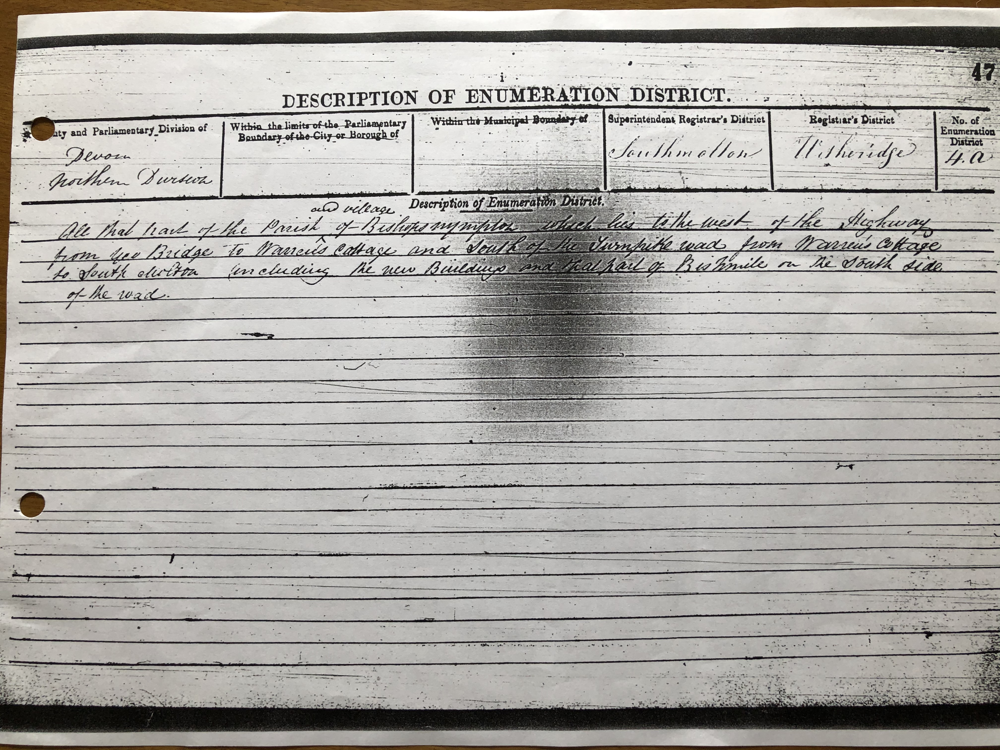

George Greenslade

Extract from 1851 census of Bishop's Nympton - page 1
Click on photo to see page 2.
p2.jpg)
Extract from 1851 census of Bishop's Nympton - page 2
The census shows George Greenslade, age 49, was the married head of a household whose occupation was farmer of 17 acres. The household included (1) his wife A. Greenslade, age 48, (2) an unmarried son whose initial appears to be G., age 19, (3) another unmarried son, age 14, (4) an unmmarried daughter with the initial E., age 8, and (5) a visitor named R. Court, age 51.